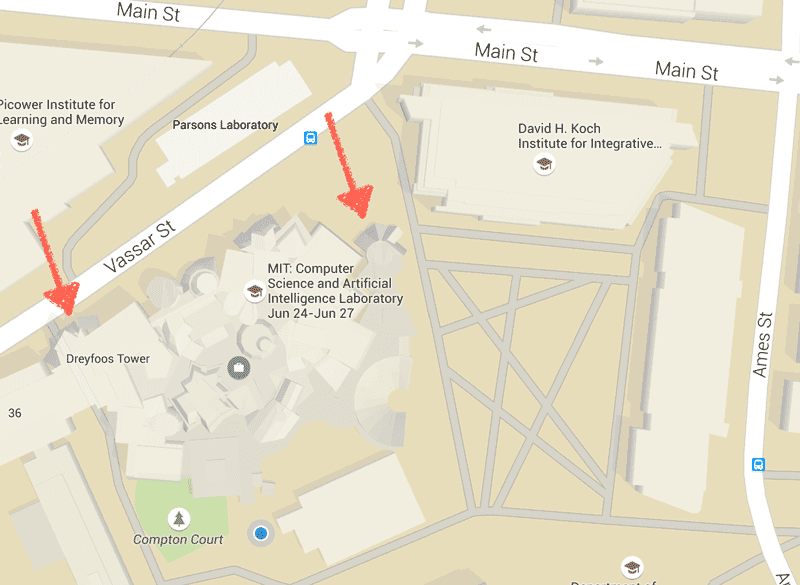

JuliaCon 2016


The third Julia conference will take place June 21st-25th, 2016 at the Massachusetts Institute of Technology in Cambridge, Massachusetts. Expect cutting-edge technical talks, hands-on workshops, a chance to rub shoulders with Julia's creators, and a weekend in a city known for its historical significance and colonial architecture. Looking forward to seeing you there!
The JuliaCon 2016 committee is happy to announce the following keynote speakers:
Timothy E. Holy is Associate Professor of Neuroscience at Washington University in St. Louis. In 2009 he received the NIH Director’s Pioneer award for innovations in optics and microscopy. His research interests include imaging of neuronal activity and his lab was probably one of the first to adopt Julia for scientific research. He is a long time Julia contributor and a lead developer of Julia’s multidimensional array capabilities as well as the author of far too many Julia packages.
Thomas J. Sargent is Professor of Economics at New York University and Senior Fellow at the Hoover Institution. In 2011 the Royal Swedish Academy of Sciences awarded him the Nobel Memorial Prize in Economic Sciences for his work on macroeconomics. Together with John Stachurski he founded quant-econ.net, a Julia and Python based learning platform for quantitative economics focusing on algorithms and numerical methods for studying economic problems as well as coding skills.
 Guy L. Steele Jr. is a Software Architect for Oracle Labs and Principal Investigator of the Programming Language Research project. The Association for Computing Machinery awarded him the 1988 Grace Murray Hopper award. He has co-designed the programming language Scheme, which has greatly influenced the design of Julia, as well as languages such as Fortress and Java.
Guy L. Steele Jr. is a Software Architect for Oracle Labs and Principal Investigator of the Programming Language Research project. The Association for Computing Machinery awarded him the 1988 Grace Murray Hopper award. He has co-designed the programming language Scheme, which has greatly influenced the design of Julia, as well as languages such as Fortress and Java.
Talks in previous years tackled problems in such diverse fields as bioinformatics, economics, numerical optimization, parallel computing, web development, and more. For an example of what to expect, check out this random talk from last year's JuliaCon:
The conference will be held in the Stata Center in rooms 123, 141, and 144.
The arrows below point to the entrances that will be unlocked for the hackathon on Saturday:

The JuliaCon committee is composed entirely of volunteer organizers
and can be reached at juliacon@googlegroups.com with any questions
or comments.
Accommodations for the conference can be found on MIT's Where To Stay and Bed and Breakfast pages. If none of the locations on these pages suit you, here are a few additional B&B-style locations:
Want to be a JuliaCon 2016 sponsor? Three different sponsorship tiers are available:
| Sponsorship | Tier | Complimentary Tickets | Speaking Slot |
|---|---|---|---|
| $15000 | Platinum | 3 tickets (Conference + Workshop) | 15 minutes |
| $5000 | Gold | 2 tickets (Conference + Workshop) | 10 minutes |
| $2000 | Silver | 1 ticket (Conference + Workshop) | 5 minutes |
For further details on sponsorship, please contact the JuliaCon committee.
JuliaCon 2016 Platinum sponsors:
JuliaCon 2016 Gold sponsors:

JuliaCon 2016 Silver sponsors:
...along with a generous personal donation from Jeffrey Sarnoff.
With 100+ attendees for JuliaCon 2014 and JuliaCon India, and 200+ attendees for last year's JuliaCon at MIT, we hope that this year we'll be able to meet even more of you and further grow our awesome community of scientists, hackers and engineers. Come join us!
In the meantime, feel free to check out previous JuliaCons by following the links below:
All attendees, speakers, sponsors, and volunteers at our conference are required to agree with and follow the code of conduct. As this is a MIT Event, attendees should also respect the Policy on Harassment.
JuliaCon is dedicated to providing a harassment-free conference experience for everyone, regardless of gender, sexual orientation, disability, physical appearance, body size, race, religion, or tabs vs spaces preference. We do not tolerate harassment of conference participants in any form. Sexual language and imagery is not appropriate for any conference venue.
Harassment includes offensive verbal comments, sexual images in public spaces, deliberate intimidation, stalking, following, harassing photography or recording, sustained disruption of talks or other events, inappropriate physical contact, and unwelcome sexual attention. Participants asked to stop any harassing behavior are expected to comply immediately.
If a participant engages in harassing behavior, the conference organizers may take any action they deem appropriate, including warning the offender or expulsion from the conference with no refund. If you are being harassed, notice that someone else is being harassed, or have any other concerns, please contact a member of conference staff immediately. Conference staff will be happy to help participants contact hotel/venue security or local law enforcement, provide escorts, or otherwise assist those experiencing harassment to feel safe for the duration of the conference. We value your attendance.
We expect participants to follow these rules at all conference venues and conference-related social events.
If an incident occurs please contact Stefan Karpinski <stefan@karpinski.org> or Katharine Hyatt <kslimes@gmail.com>.